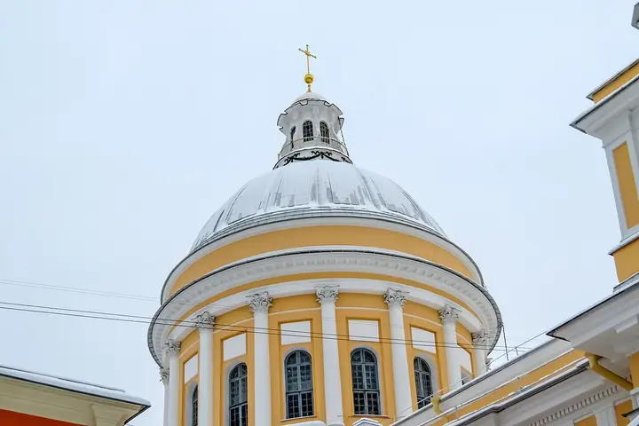

Фото: Никонико962, CC BY-SA 4.0 · Wikimedia Commons
Монастырь · Центр
Александро-Невская лавра
Старинный монастырский ансамбль с собором и историческими некрополями; тихая прогулка вдали от шума центра.
- ₽ · до 1 500 ₽ на человека
- Новое в каталоге
Позвать сюда: Александро-Невская лавраОткрыть в каталоге: Александро-Невская лавраМаршрут до места: Александро-Невская лавра
Адрес и детали
- Адрес
- наб. реки Монастырки, 1
Открыть на Яндекс Картах (в новой вкладке) - Метро
- м. Площадь Александра Невского
- Район
- Центр
- Цена
- до 1 500 ₽ на человека
- Проверено
- работает — проверили в ноябре 2026
Похожие рядом


Что ещё рядом
Как позвать
- Выбери план, место или событие — в карточке адрес, цены и маршрут в Яндекс Картах.
- Нажми «Позвать сюда» — соберётся приглашение-игра для свидания или голосование для компании.
- Отправь ссылку в любой мессенджер: тебе ответят, а компания отметит, куда и когда может. Бесплатно и без регистрации.